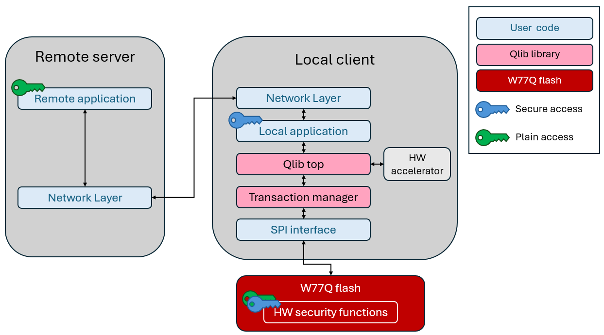

|
QLIB Library User Guide
|
|
|
QLIB Library User Guide
|
|
Note: Remote + Local mode is not yet supported in this library release.
In this mode QLIB runs both on the microcontroller and on the remote server and provides different security services for each.

For example, suppose W77Q/T is configured to provide two security services: secure data storage and secure firmware update. The keys for these services are stored in W77Q/T.
The microcontroller has access only to the secure data storage key, so it can perform that operation on W77Q/T. The microcontroller does not have access to the secure firmware update key, so it cannot update its firmware. However, the remote server can perform the Secure firmware update, as it does have access to the appropriate keys.
The remote server and the microcontroller can both access W77Q/T using the Transaction Manager. The Transaction Manager permits only one session with W77Q/T to be open at a time, allowing operations within that session to be atomic. Therefore, only one QLIB top instance can access W77Q/T at a time.
In this example, both the remote server and the local microcontroller can perform the W77Q/T security operations allowed by their respective keys, including secure attestation, secure integrity checks, and secure watchdog control.
 1.9.4
1.9.4